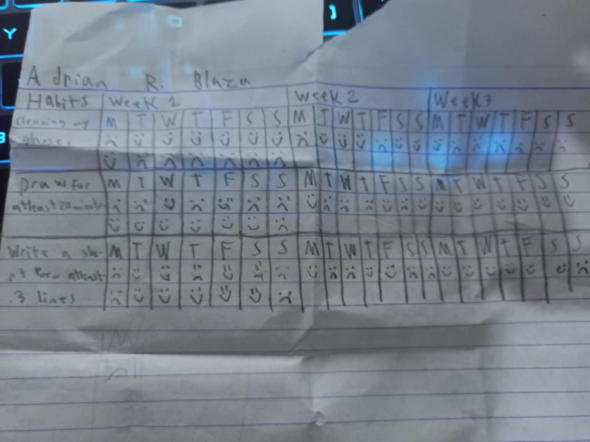
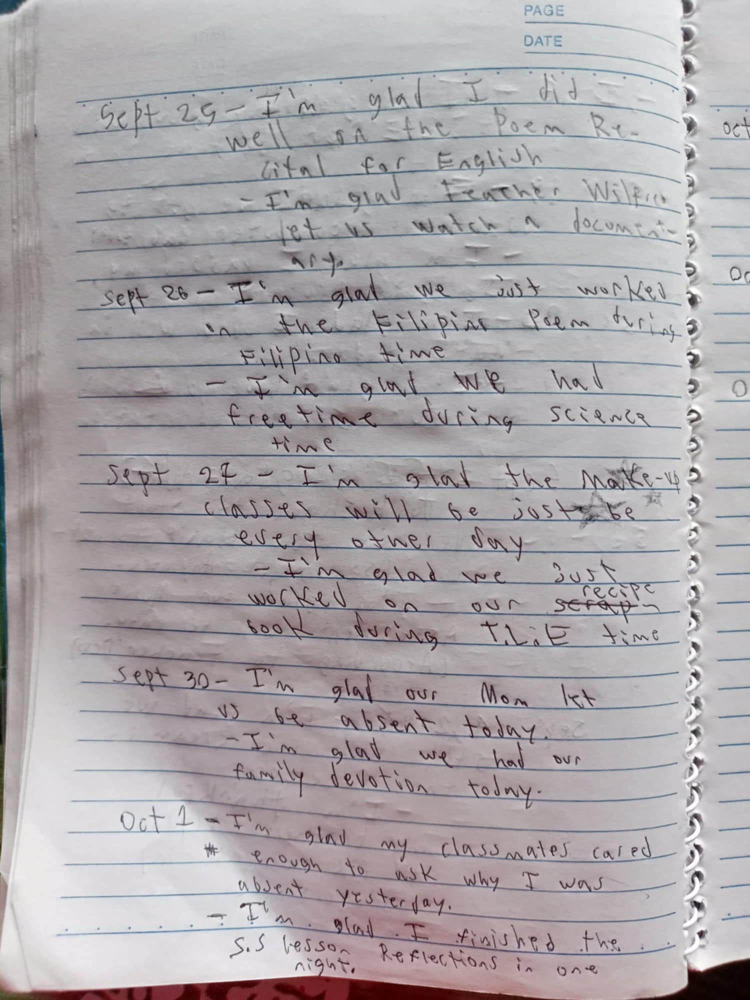
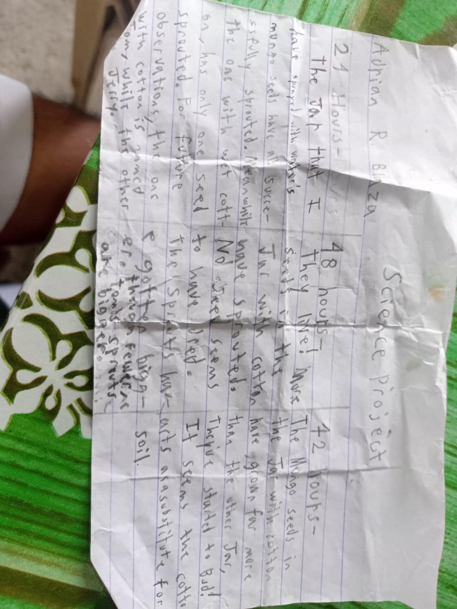
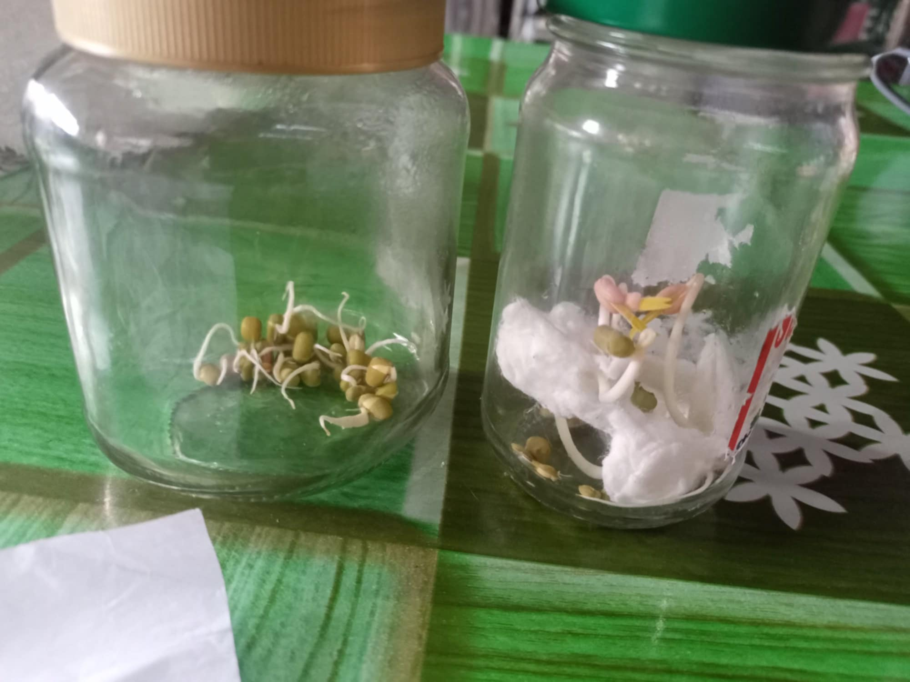
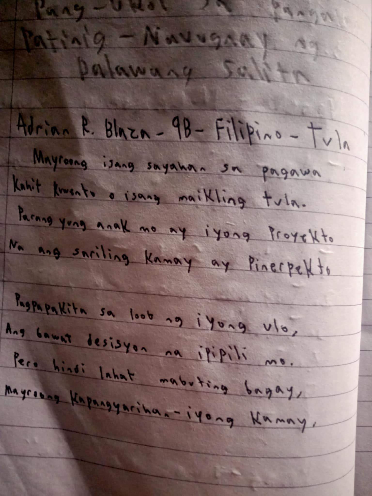
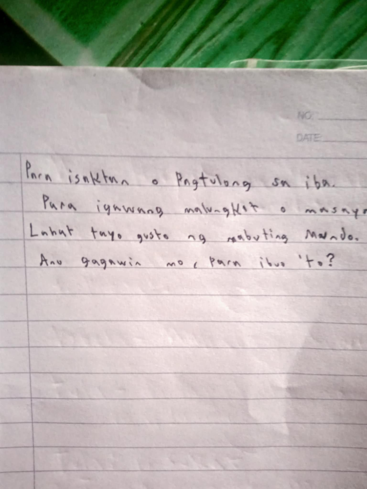
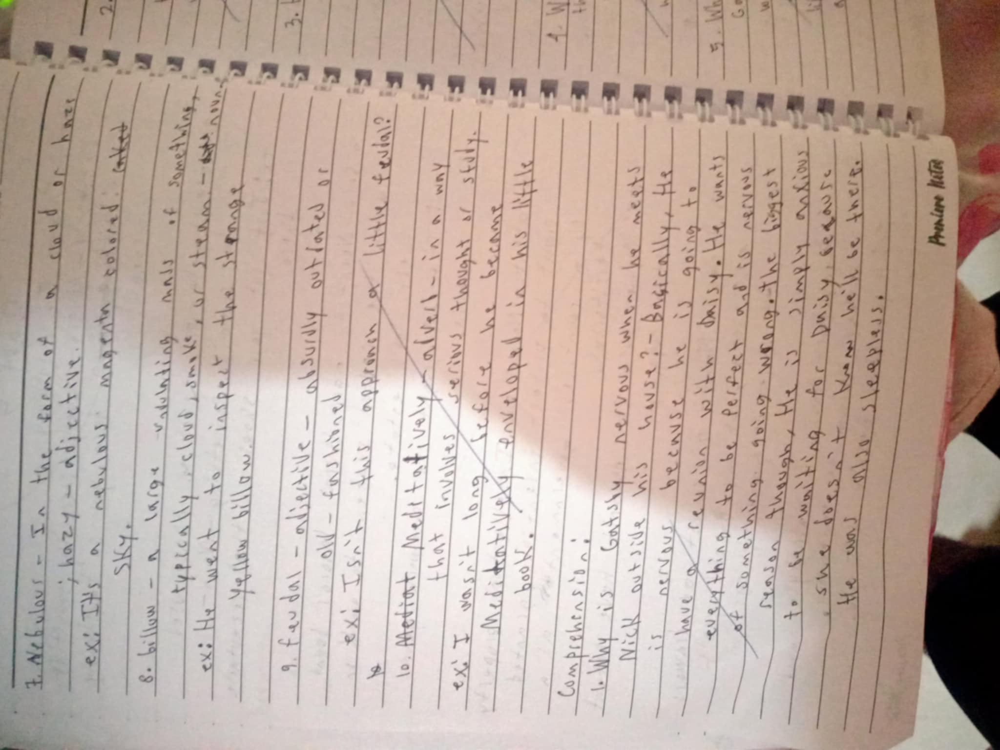
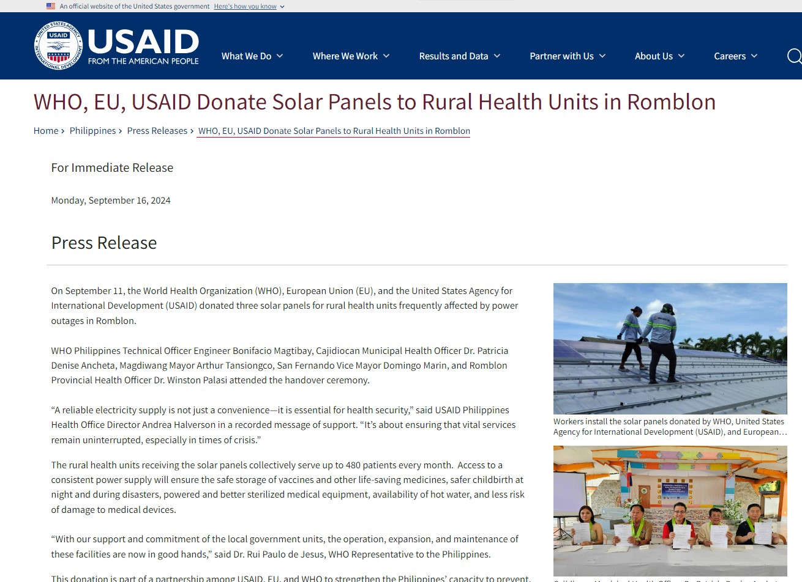

Hello! I am Adrian Blaza and this is my project portfolio for Computer.
This is From my Values Project

It's essentially a habit forming paper.
The sad faces are for when I didn't do the habit Listed Before it-
And the happy faces are for when I did.
This is my second Values Project-
It's a gratitude journal to write in every weekday
for all the things we're grateful for!

Weekends are not included
The next project is for Science
One I actually quite enjoyed!

It's an Observation Paper for some
Plants we grew!
Here are the plants!

Next up is a poem for Filipino


It reads:
Mayroon isang sayahan sa pagawa.
Kahit kuwento o isang maikling tula.
Parang yung anak mo ang iyong proyekto-
Na ang sariling kamay ay pinerpekto.
Pagpapakita sa loob ng iyong ulo,
Ang bawat desisyon na ipipili mo.
Pero hindi lagat ay mabuting bagay,
Mayroong kapangyarihan - iyong kamay,
Para isaktan o Magtulong sa iba.
para igawang malungkot o masaya.
Lahat tayo gusto ng mabuting Mundo.
Ano gagawin mo, para ibuo 'to?
Next is my English journal

Each Chapter of "The Great Gatsby has a Summary,Comprehension,Reflection,And Vocabulary.
Next is my Economics Journal.
Sadly my Economics Journal is currently missing
However It's essentially a weekly news report and Reflection for each lesson

Here's an article I know I had written down
Last but not least is my group Arts Project
It's not currently finished
but if I were to wait I would not be able
to include it here
That's it for this website!